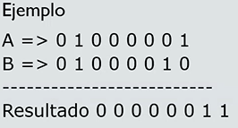
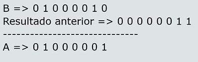

Definición
Es un criptosistema de cifrado de flujo simétrico, por el que texto en claro se combina con una clave aleatoria igual de larga que en el texto en claro y que sólo se utiliza una vez. Fue inventado en 1917. Si la clave es verdaderamente aleatoria, nunca se reutiliza y, por supuesto, se mantiene en secreto
¿Cómo funciona y por qué es indescifrable?
Funciona haciendo la operación XOR del mensaje y la clave (para cifrar y descifrar)
El XOR es una operación que se define a nivel de bits, la idea es la siguiente, con un par de bits, si los dos son iguales el XOR es 0, si son distintos el XOR es 1
Entonces si hacemos el XOR de alguno y el resultado, recuperamos el valor inicial

Esta propiedad es la base de este cifrado
Es un sistema en el que se usa llave generada de manera aleatoria para cifrar un mensaje que después ha de ser descifrado por el receptor usando la misma llave que se uso para cifrar el mensaje. Los mensajes cifrados con llaves basadas en aleatoriedad tienen la ventaja de que, no hay manera de romper el código. Cada cifrado es único y no tiene relación con el siguiente cifrado, de manera que no se puede detectar ningún patrón.
Sin embargo, quien descifra el texto debe tener acceso a la misma llave que se uso para descifrarlo lo cual crea el problema, para quien va a descifrar, de como obtener la llave, o de cómo mantener ambas llaves seguras.
Ventajas
- Se ha comprobado ser un sistema absolutamente irrompible
- Se puede cifrar y descifrar hasta con lápiz y papel
- Ideal para mensajes de mucha importancia
Desventajas
- No es práctico aplicarlo a gran escala y distancia, pues se corre el riesgo de perder las claves
- La clave es tan larga como el texto cifrado.
Condiciones para que el texto cifrado sea imposible de descifrar
- La clave debe ser verdaderamente aleatoria
- La clave debe ser al menos tan larga como el texto sin formato
- La clave nunca debe reutilizarse total o parcialmente
- La clave debe mantenerse completamente en secreto